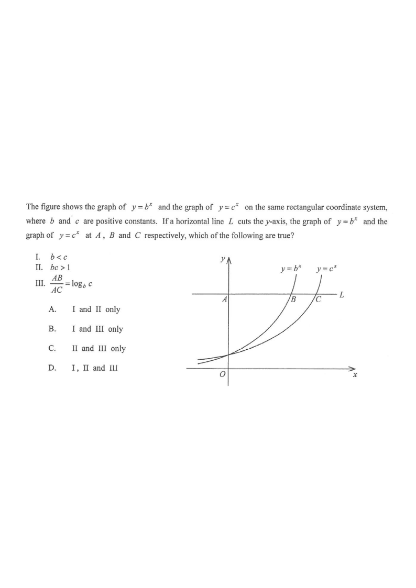

Step 1 — the given graph: \(y=b^x\) lies above \(y=c^x\) for \(x>0\).
The figure shows the graph of \(y=b^{x}\) and the graph of \(y=c^{x}\) on the same rectangular coordinate system, where \(b\) and \(c\) are positive constants. If a horizontal line \(L\) cuts the \(y\)-axis, the graph of \(y=b^{x}\) and the graph of \(y=c^{x}\) at \(A\), \(B\) and \(C\) respectively, which of the following are true?
I. \(b < c\)
II. \(bc > 1\)
III. \(\dfrac{AB}{AC}=\log_{b}c\)

Both \(b>0\) and \(c>0\). From the figure, for \(x>0\) the curve \(y=b^{x}\) lies above the curve \(y=c^{x}\); also both curves rise to the right, so they are increasing exponential functions (\(b>1\) and \(c>1\)).
Put \(x=1\). Since \(b^{1}\) is above \(c^{1}\) on the graph,
\[ b^{1} > c^{1} \;\Longrightarrow\; b > c. \]
So statement I (\(b<c\)) is false.
Both curves are upward sloping exponential curves with base \(>1\):
\[ b>1 \quad\text{and}\quad c>1. \]
Multiplying two numbers each greater than \(1\):
\[ bc > 1. \]
So statement II is true.
Let the horizontal line \(L\) be \(y=k\) with \(k>1\). Then \(A=(0,k)\) (on the \(y\)-axis).
\(B\) is on \(y=b^{x}\): \(\;k=b^{x_B}\), so \(x_B=\log_{b}k\), hence
\[ AB = \frac{1}{\log_{b}k}\cdot\log_{b}k \cdot \frac{1}{\log_{b}k} \]
More cleanly: \(AB=x_B=\log_{b}k\).
\(C\) is on \(y=c^{x}\): \(\;k=c^{x_C}\), so \(x_C=\log_{c}k\), hence
\[ AC = x_C = \log_{c}k. \]
\[ \frac{AB}{AC}=\frac{\log_{b}k}{\log_{c}k} =\frac{1/\log_{k}b}{1/\log_{k}c} =\frac{\log_{k}c}{\log_{k}b} =\log_{b}c. \]
So statement III is true.
Question. The figure shows the graphs of \(y=b^{x}\) and \(y=c^{x}\), where \(c>b>1\). A horizontal line \(L:y=k\ (k>1)\) cuts the \(y\)-axis, \(y=b^{x}\) and \(y=c^{x}\) at \(A\), \(B\) and \(C\) respectively. (a) Show that \(\dfrac{AB}{AC}=\log_{b}c\). (b) Find \(\dfrac{AB}{AC}\) when \(b=2\) and \(c=8\).